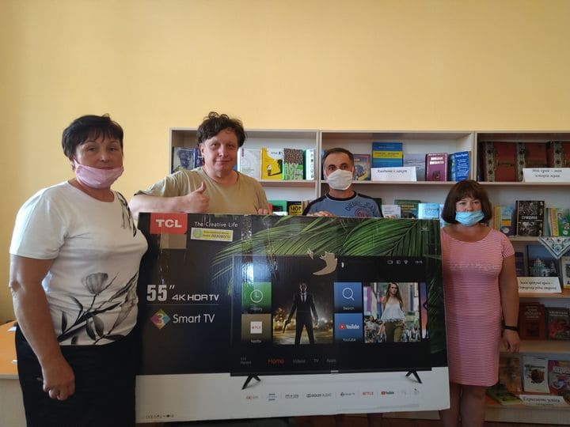
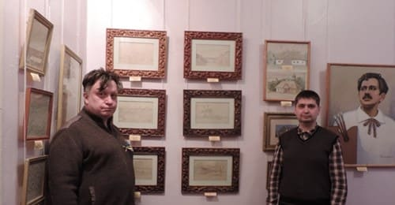
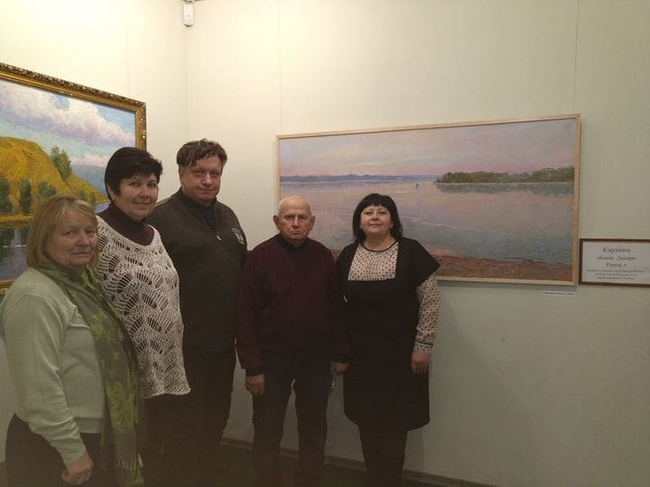
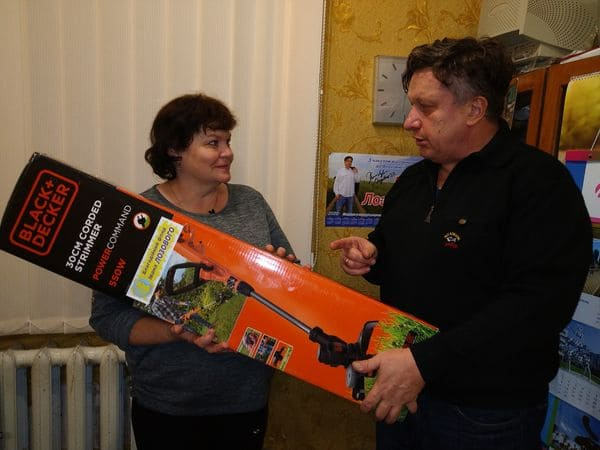
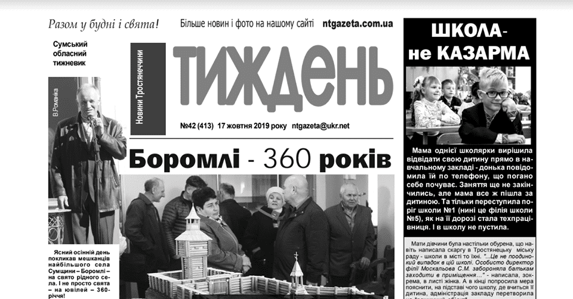
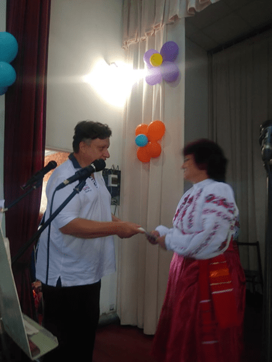
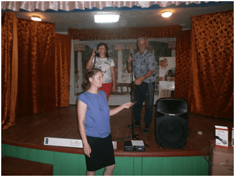
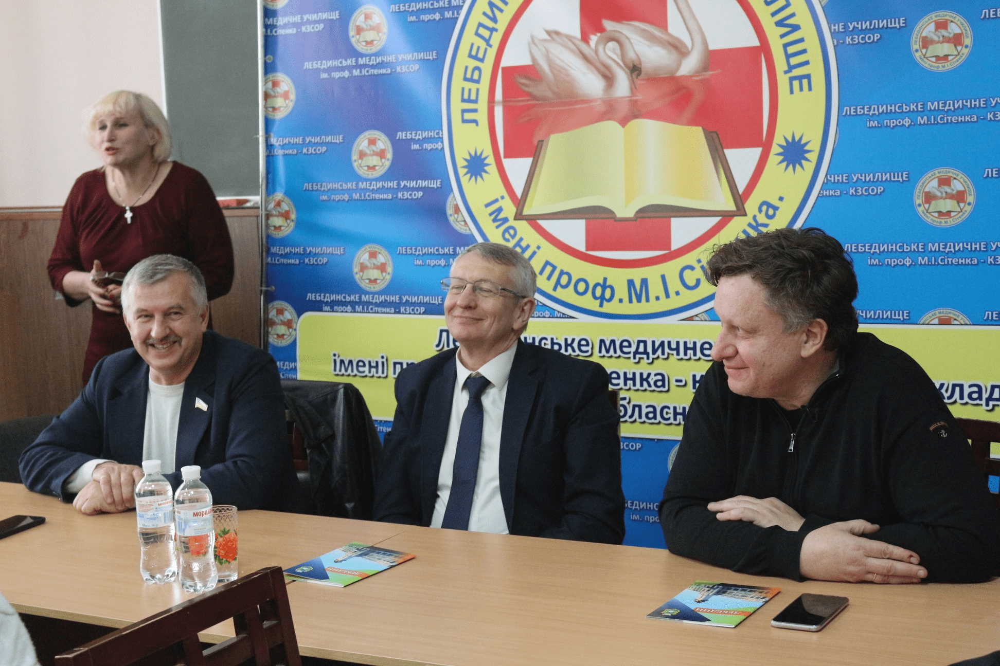
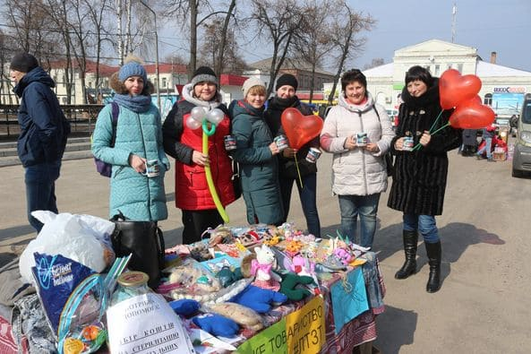

Допомога закладам культури:
24 лютого 2021р. - Лебединський міський художній
музей ім. Б.К.Руднєва. Подарунок від фонду:
Екслібрис (ксилографія, середина ХХ-го століття)
всесвітньо відомого художника футуриста Давида
Бурлюка, який родом з Лебединщини.

27 грудня 2020р. - Охтирський краєзнавчий музей.
Подарунок від фонду: Глиняний ескіз бюсту
ветерана російсько-української війни Миколи
Чупакова, сумського скульптора Олега Григоровича
Прокопчука.
13 грудня 2020р. - Музей історії с. Боромля.
Подарунок від фонду: комп'ютер.
1 вересня 2020р. - Лебединський міський художній
музей ім. Б.К.Руднєва. Подарунок від фонду:
Піаніно, якому понад 170 років і яке колись
належало відомому роду Капністів.

12 жовтня 2020р. - Бориса Ткаченко, письменник
м. Лебедин. Подарунок від фонду: Металевий бюст
митця, сумського скульптора Олега Григоровича
Прокопчука.
18 березня 2021р. - Підведення підсумків
фестивалю “Таланти багатодітної сім'ї – 2021” м.
Лебедин. Подарунки від фонду: Солодощі для всіх
72 учасників.
16 серпня 2020р. - Редакція місцевої газети
“Великописарівська Ворскла”. Подарунок від
фонду: Моноблок.

3 серпня 2020р. - Бібліотека с. Бугрувате.
Подарунок від фонду: Телевізор.
3 червня 2020р. - Фестиваль “Таланти
багатодітної родини” м. Лебедин. Подарунок від
фонду: Призи та подарунки всім учасникам.

24 лютого 2020р. - Лебединський міський художній
музей імені Б.К.Руднєва. Подарунок від фонду: 15
дерев'яних рамок.

11 грудня 2019р. - День Збройних Сил України у
смт. Велика Писарівка. Подарунок від фонду:
Годинники з гравіюванням для
військовослужбовців.

6 грудня 2019р. - Охтирський краєзнавчий музей.
Подарунок від фонду: Картина Охтирського
майстра-художника Івана Григоровича Шаповала
“Канів. Дніпро. Ранок”.

1 листопада 2019р. - Будинок дитячої та юнацької
творчості та Станція юних натуралістів смт.
Велика Писарівка. Подарунок від фонду:
Косачка-тримач.

21 жовтня 2019р. - Редакція газети “Тиждень” м.
Тростянець. Подарунок від фонду: Річна
передплата на газету “Тиждень” для 54 членів
Тростянецької районної організації інвалідів.
25 серпня 2019р. - День села Тарасівка.
Подарунки від фонду: Батути, гірки та феєрверки.
25 серпня 2019р. - День села Жигайлівка.
Подарунок від фонду: Феєрверки.

21 серпня 2019р. - Парк ім. Полуботка м.
Лебедин. Подарунок від фонду: Повна
реконструкція парку.
20 серпня 2019р. - 365-річчя м. Лебедин.
Подарунок від фонду: Професійна сцена для
місцевої ради.

10 серпня 2019р. - День села Розсоші. Подарунок
від фонду: “Пінна” вечірка.

6 серпня 2019р. - День села Добрянське.
Подарунок від фонду: Феєрверки.

18 серпня 2019р. - Колектив “Веселі молодиці” с.
Розсоші. Подарунок від фонду: Премії від Фонду
Лозового.
17 серпня 2019р. - Всеукраїнський фестиваль
мистецтв “Боромля -2019”. Подарунок від фонду:
Принтер.
20 червня 2019р. - Презентація оновленої книги
Бориса Ткаченка “З ким воюємо, брате?” м.
Охтирка. Подарунок від фонду: Перевидання 1 000
примірників книги Бориса Ткаченка “З ким воюємо,
брате?”.
17 червня 2019р. - Акція “Майбутнє Лебедина
очима дітей та їх батьків!”. Подарунок від
фонду: Стенди, листівки, солодощі.
15 червня 2019р. - Клуб/бібліотека с.
Московський Бобрик. Подарунок від фонду:
Українські сучасні книги.
15 червня 2019р. - Клуб/бібліотека с. Ворожба.
Подарунок від фонду: Українські сучасні книги.
15 червня 2019р. - Клуб/бібліотека с. Голубівка.
Подарунки від фонду: Українські сучасні книги.

15 червня 2019р. - Клуб/бібліотека с. Штепівка.
Подарунки від фонду: Українські сучасні книги.
15 червня 2019р. - Клуб/бібліотека с. Рябушки.
Подарунки від фонду: Україномовні сучасні книги.
15 червня 2019р. - Клуб/бібліотека с. Калюжне.
Подарунки від фонду: Українські сучасні книги.

15 червня 2019р. - Бібліотека с. Великий.
Вистороп Подарунки від фонду: Книги.

15 червня 2019р. - Клуб/бібліотека с. Малий
Вистороп. Подарунки від фонду: Українські
сучасні книги.

14 червня 2019р. - Будинок культури с.
Чернеччина. Подарунки від фонду: Ноутбук і
принтер.

14 червня 2019р. - Бібліотека с. Чернеччина.
Подарунки від фонду: Україномовні книги.

14 червня 2019р. - Акція “Майбутнє Охтирки очима
дітей та їх батьків!”. Подарунки від фонду:
Стенди, маркери, призи.

9 червня 2019р. - Урочиста церемонія
нагородження “Уславлені жінки Охтирщини – 2019”
за ініціативи Охтирської міської організації
роботодавців “Діалог”. Подарунки від фонду:
Дипломи, фени, електрочайники чайники, блендери.

6 червня 2019р. - Будинок культури с. Куземин.
Подарунок від фонду: Проектор.

6 червня 2019р. - Будинок культури с. Лутище.
Подарунок від фонду: Проектор.

3 червня 2019р. - Ансамбль “Мащаночка” с.
Мащанка. Подарунки від фонду: Колонка,
мікрофони, мікрофонні стійки.

3 червня 2019р. - Заводський клуб. Подарунок від
фонду: Проектор.

28 травня 2019р. - Будинок культури с.
Гарбузівка. Подарунок від фонду: Колонка-валіза.

28 травня 2019р. - Бібліотека с. Гарбузівка.
Подарунок від фонду: Українські сучасні книги.

28 травня 2019р. - Сільський клуб/бібліотека с.
Куданівка. Подарунок від фонду: Україномовні
книги та аптечки.
28 травня 2019р. - Сільський клуб с. Бишкінь.
Подарунок від фонду: Мікрофони (2 шт).

28 травня 2019р. - Бібліотека с. Бишкінь.
Подарунок від фонду: Українські сучасні книги.
21 травня 2019р. - Будинок культури с.
Чупахівка. Подарунок від фонду: Проектор.

21 травня 2019р. - Клуб/бібліотека с.
Підопригори. Подарунки від фонду: Українські
книги.

21 травня 2019р. - Клуб/бібліотека с.
Павленкове. Подарунки від фонду: Українські
сучасні книги.
21 травня 2019р. - Клуб/бібліотека с. Межирич.
Подарунки від фонду: Українські сучасні книги.

17 травня 2019р. - Великописарівський районний
будинок культури - нагородження переможців
олімпіад. Подарунки від фонду: фітнес браслети
для учнів (7 шт) та смарт-годинники для
викладачів (5 шт); постільний комплект: ковдра,
подушка, постільна білизна; намети (2 шт).
11 травня 2019р. - Сільський будинок культури
Боромлянської сільської ради. Подарунок від
фонду: Ноутбук.

9 травня 2019р. - Урочиста церемонія
нагородження “Уславлені Жінки Лебединщини -
2019". Подарунки від фонду: Грамоти та фени (54
шт).
9 травня 2019р. - Волонтери відвідали ветеранів
Другої світової війни м. Лебедин. Подарунки від
фонду: Квіти, солодощі та інші подарунки.
4-5 травня 2019р. - Екскурсія 52 учнів із усіх
шкіл м. Охтирки до столиці. Подарунки від фонду:
Подорож і проживання.

9 травня 2019р. - Клуб-бібліотека с. Будилка.
Подарунки від фонду: Україномовні книги.

18 квітня 2019р. - Лебединський районний будинок
творчості. Подарунок від фонду: Колонка-валіза.

6 квітня 2019р. - Круглий стіл “Така відома -
невідома Лебединщина”. Подарунки від фонду:
Туристичні брошури.

5 квітня 2019р. - Будинок культури с. Грунь.
Подарунки від фонду: Принтер, чашки, проектор.

4 квітня 2019р. - “Веселий Сорочинський ярмарок”
у м. Лебедин. Подарунки від фонду: Чашки.
30 березня 2019р. - Творчий “Квартирник”, за
підтримки Благодійного фонду Івана Лозового у м.
Охтирка. Подарунки від фонду: Оренда зали,
мікрофони.

29 березня 2019р. - Великописарівський обласний
фестиваль проектів “Я – нащадок патріотів
України”. Подарунки від фонду: Дипломи,
смарт-годинники, планшети.

22 березня 2019р. - Будинок культури с. Вільне.
Подарунки від фонду: Принтер та колонка з
радіомікрофоном.

20 березня 2019р. - Виставка-продаж домашніх
улюбленців м. Лебедин. Подарунки від фонду:
Сувенірні чашки.

15 березня 2019р. - Лебединський обласний
фестиваль проектів “Я – нащадок патріотів
України”. Подарунки від фонду: дерев'яні
дипломи, смарт-годинники (2 шт), планшет (1 шт),
блютуз наушники (15 шт).

8 березня 2019р. - Міжнародний день прав жінок
та миру у м. Лебедин. Подарунки від фонду: Квіти
для жінок.
4 березня 2019р. - Охтирська районна бібліотека.
Подарунки від фонду: Ноутбук, чашки.

2 березня 2019р. - Свято Масляної у с. Високе.
Подарунки від фонду: Чашки і рушники, ополоник
та кухонна лопатка, сковорідка для млинців,
емальована миска.
23 лютого 2019р. - Безкоштовний концерт Ніни
Матвієнко, організований Фондом Івана Лозового у
м. Лебедин. Подарунки від фонду: Оренда зали,
гонорар.

27 грудня 2018р. - Безкоштовний концерт Ніни
Матвієнко, організований Фондом Івана Лозового у
м. Охтирка. Подарунки від фонду: Оренда зали,
гонорар.

22-23 грудня 2018р. - Екскурсія для групи дітей
із м. Лебедин, яку організував Фонд Лозового, до
столиці. Подарунки від фонду: подорож, супровід,
екскурсії.

27 листопада - 3 грудня 2018р. - Виставка
Охтирського художника Сергія Степанова в
київській галереї “ART: EGO International”, яку
організував Фонд Івана Лозового у м. Київ.
Подарунки від фонду: Оренда галереї, транспортні
витрати.

30 листопада 2018р. - Міжнародний бізнес-семінар
“Як працювати із Західними бізнесовими колами -
формула успіху для українських підприємців”.
який організував Фонд Івана Лозового у м. Суми
Подарунки від фонду: Оренда зали, проїзд та
проживання для спікерів.
20 листопада 2018р. - Лебединський міський
художній музей ім. Б.К.Руднєва. Подарунок від
фонду: Альбом “Казимир Малевич. Київський період
1928-1930”.

1 листопада 2018р. - Охтирська районна
бібліотека. Подарунки від фонду: Кронштейн,
антена, LCD smart телевізор 55 дюймів.
1 листопада 2018р. - Лекція історика Романа
Коваля, проведена за сприяння благодійного фонду
Івана Лозового у м. Охтирка. Подарунки від
фонду: Оренда зали, проїзд та проживання для
спікерів.